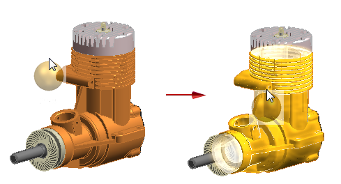
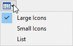

Using the Style Palette
When you work with assemblies, you can use the Style Palette pane to change the colors of faces on parts and components. The Style Palette displays the high-quality material color swatches that represent the materials available in the Material Table dialog box.

You can drag a material color swatch from the Style Palette onto parts and features in the assembly model. The body is highlighted to indicate that the material color is applied when the mouse button is released.

Additionally, you can right-click any material color swatch to Apply a style to any eligible object in the current select set, Modify a style, Delete a style, or Save to Material Table.
The Style Palette is a member of the docking window tab set in the Assembly environment. You can use the standard controls to pin the Style Palette window in place, tear off the tab from the tab set, and reposition the window using docking stickers. For more information, see Manipulate a docking window.
Viewing available styles
With over 1000 high quality styles available, being able to manage your list of styles is important. The Style Palette pane contains a hierarchical list of libraries that enables you to select from categories of styles. For example, Recently Used, Current Document, and so on.
A View option controls how the styles are displayed. You can view styles with Large icons and text, Small icons and text, or in a List.

You can also search for a style on the Style Palette. When you search, matching basic and high-quality styles from any category are displayed.
Clearing an applied style
Styles can be applied to objects at various levels. For example, a painted part could have a face style of red, but when that part becomes part of an assembly, the part could have an applied color of blue. When you want to clear a style that was applied while the document was opened for edit, you can choose from two options:
- None
-
Clears current assembly level style.
- Use Part Style
-
Clears all levels of style back to the style used at the part level.
The None and Use Part Style options are also accessible from the Face Style drop list in the View tab→Style group.
How do I
Search for a style in the Style PaletteApply a face style to a part with the Style Palette
Apply detailed stylistic changes to assemblies with Face Overrides
Create a face style to apply to parts
Delete a face style from a document
Look up more details
Face Overrides dialog boxEdges Tab
Faces Tab
Texture Tab
Bump Tab
Appearance Tab
New Face Style dialog box
Face Style Name Tab
Modify Face Style dialog box
Reflection Box tab (View Overrides dialog box)